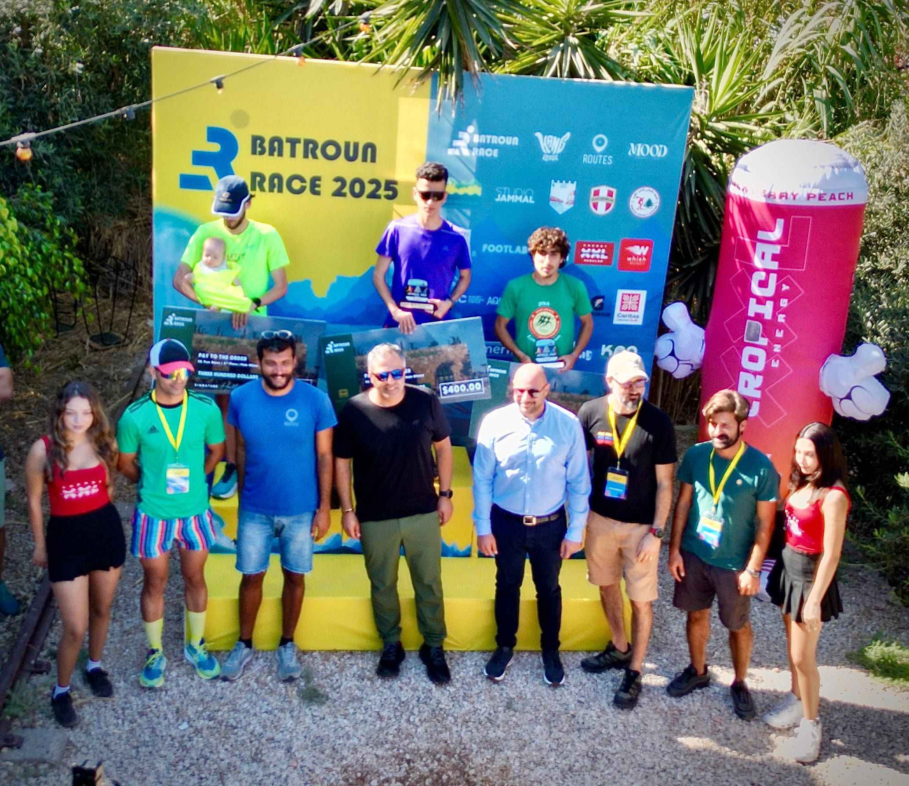
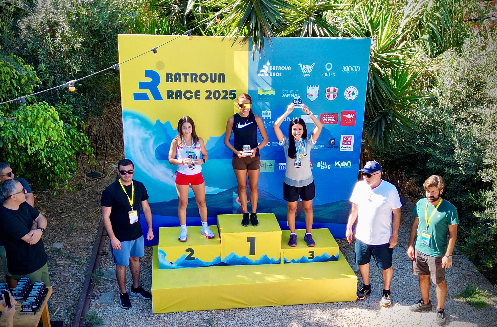
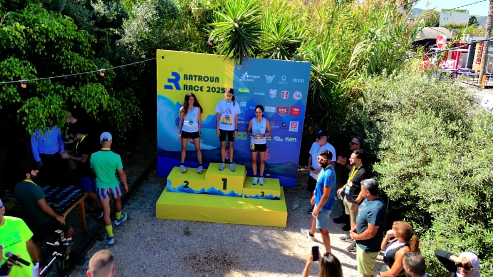
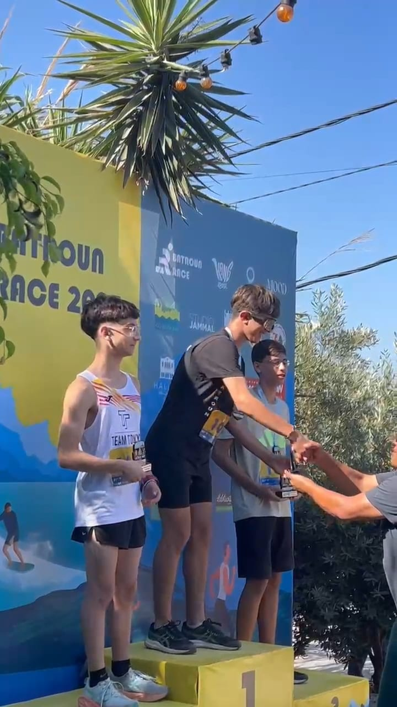
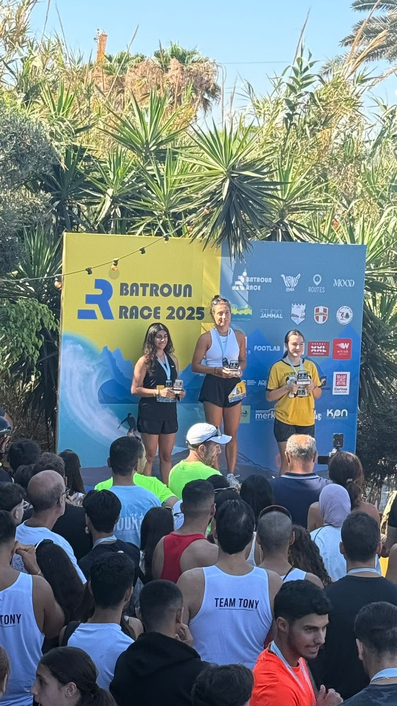
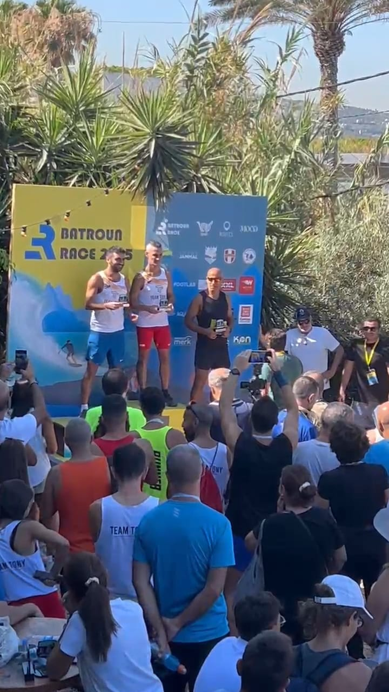
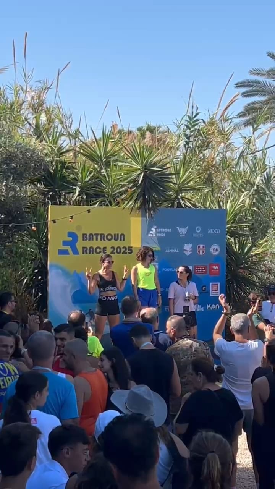
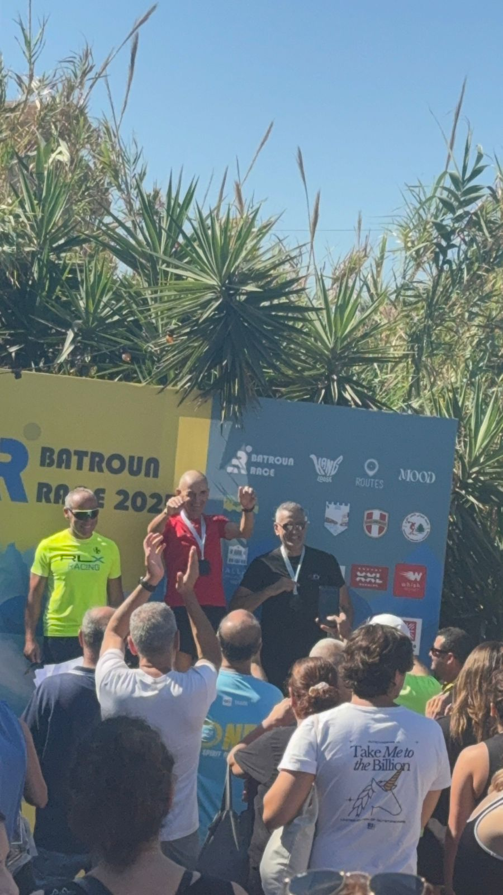
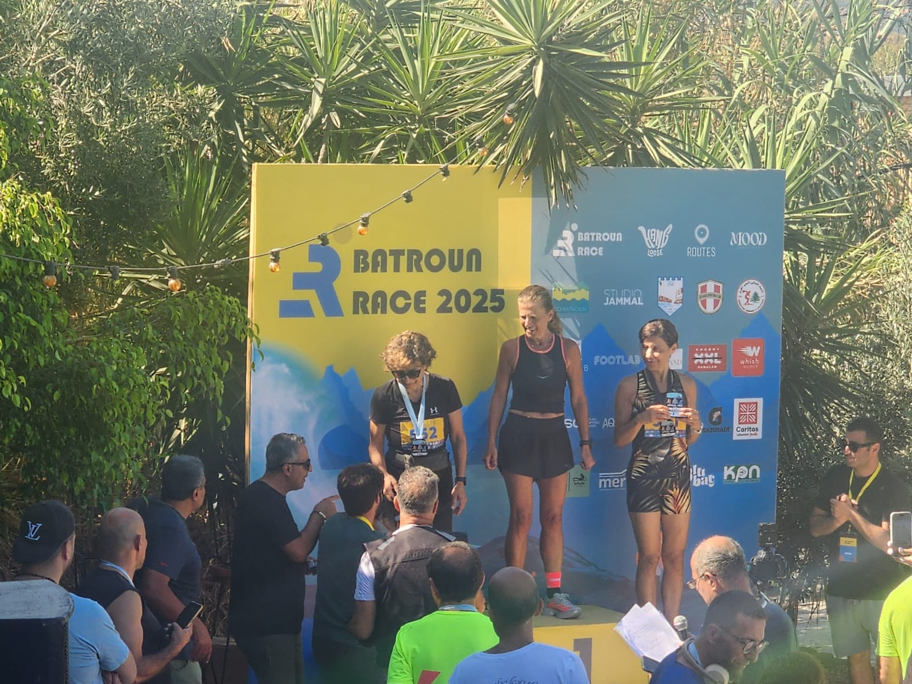

The first edition of Batroun Race took place in July 2025, marking the start of a new coastal running journey. What began as an idea came to life with the energy, commitment, and passion of the running community.

Batroun Race was made possible when professional athletes, engineers, marketers, and producers came together with one shared belief: to build a running event with meaning, quality, and community at its core.
Shaped the race experience and course spirit.
Ensured planning, safety, and technical execution.
Managed logistics and race-day flow.
Gave the event its identity and voice.
The result: a first edition welcoming 500+ runners from across Lebanon — turning Batroun into a shared moment of movement and unity.
Official podium by age category — name, age, and club.








Looking for the second edition? Full 2026 results with live timing → register.batrounrace.com/results
Registration opens soon — get notified on WhatsApp or follow @batrounrace